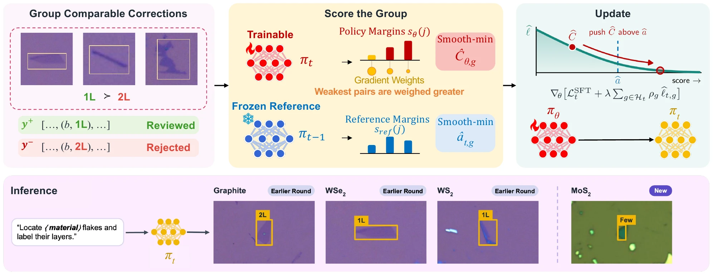
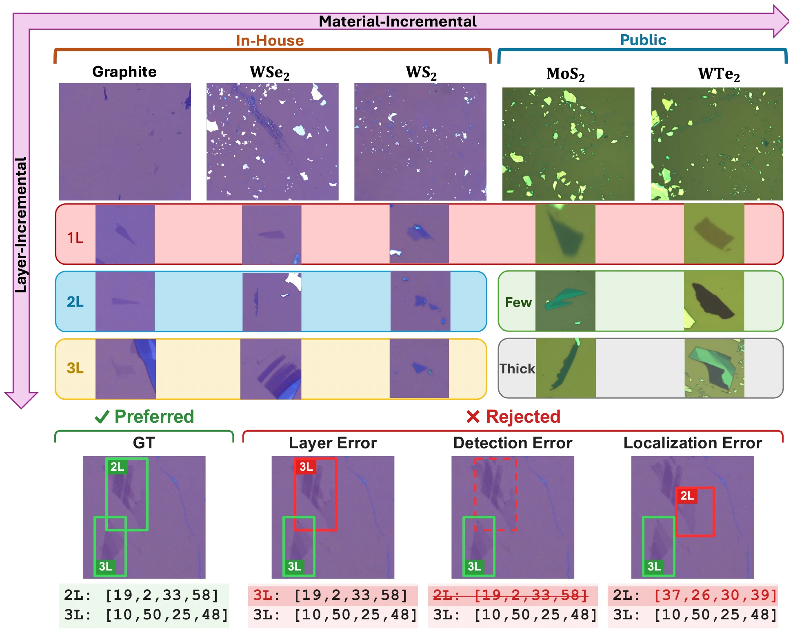
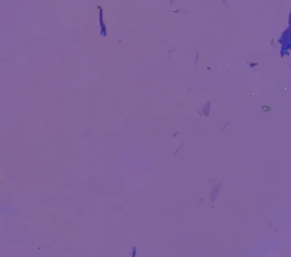
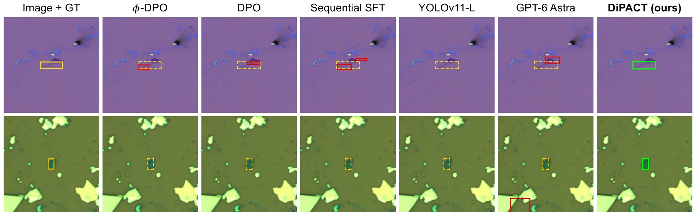

Sankalp Pandey
CVIU Lab, University of Arkansas
Vision-language models enable instruction-guided localization and recognition of two-dimensional quantum material flakes in microscopy images. Characterizing the atomic layer counts of these flakes is essential for selecting candidates with the desired properties for next-generation device fabrication, but this identification is challenged by similar optical signatures across layer classes and substantial appearance variation within each class. As new materials are introduced, models must learn these subtle visual distinctions while retaining earlier knowledge.
Conventional Direct Preference Optimization (DPO) ranks correct and incorrect characterizations individually, without aggregating the same visual distinction across images. We introduce Distributional Preference Alignment for Continual Training (DiPACT), which groups preferences sharing a directed correction and optimizes a smooth minimum of their margins. The objective emphasizes weak comparisons and aligns each group with a frozen reference selected for earlier or newly introduced classes. Our analysis connects the objective to Fisher discrimination under linear-Gaussian assumptions and bounds the loss of previously correct preference rankings under comparison coverage.
We also present the Continual Material Annotated Dataset (CoMAt), combining 205,362 expert-reviewed in-house annotations with public microscopy data for layer- and material-incremental evaluation. Experiments demonstrate state-of-the-art continual learning and fine-grained characterization performance among the evaluated methods, with benefits extending to visual recognition beyond the materials domain.
DiPACT groups the same type of correction across images and gives more weight to comparisons the model finds hardest.

Lower temperatures give the weakest comparison more weight.
Smooth-minimum margin

Round 0 In-house microscopy

Compare results for new materials, new graphite layers, and a new damage class in satellite imagery.
Dataset: Gupta et al. (2019), xBD: A Dataset for Assessing Building Damage from Satellite Imagery.

CVIU Lab, University of Arkansas
CVIU Lab, University of Arkansas
CVIU Lab, University of Arkansas
Montana State University
University of Utah
University of Utah
University of Utah
Department of Physics, University of Arkansas
CVIU Lab, University of Arkansas
Code and trained checkpoints for baseline 2D-material flake detectors (YOLO, DETR, ViTDet, etc.): github.com/uark-cviu/quantumflake
Khoa Luu, Xuan Bac Nguyen. Utilizing a Loss Function to Minimize Quantum Information Gap. US Patent App. 19/305,026, 2026.
Khoa Luu, Xuan Bac Nguyen, Hugh Churchill. Automatically Detecting False Negative Objects in 2D Material Detection Data Sets. US Patent App. 18/443,058, 2024.
Van-Quang-Huy Nguyen, Hoang-Quan Nguyen, Samee U Khan, Ilya Safro, Khoa Luu. QUACOD: Quantum Optimization via Coordinate Descent for Scalable Drone Scheduling. IEEE Quantum Week Conference, 2026.
Xuan Bac Nguyen, Hoang-Quan Nguyen, Sankalp Pandey, Tim Faltermeier, Nicholas Borys, Hugh Churchill, Khoa Luu. QuPAINT: Physics-Aware Instruction Tuning Approach to Quantum Material Discovery. IEEE/CVF Conference on Computer Vision and Pattern Recognition, Findings Track, 2026.
James B. Holliday, Eneko Osaba, Khoa Luu. An Advanced Hybrid Quantum Tabu Search Approach to Vehicle Routing Problems. Journal of Quantum Machine Intelligence, 2026.
Hoang-Quan Nguyen, Xuan-Bac Nguyen, Sankalp Pandey, Samee U. Khan, Ilya Safro, Khoa Luu. QMoE: A Quantum Mixture of Experts Framework for Scalable Quantum Neural Networks. IEEE Quantum Week Workshop, 2025.
Xuan Bac Nguyen, Benjamin Thompson, Hugh Churchill, Khoa Luu, Samee U. Khan. Quantum Vision Clustering. Discover Internet of Things, Springer, 2025.
James B. Holliday, Darren Blount, Hoang-Quan Nguyen, Samee U. Khan, Khoa Luu. QUADRO: A Hybrid Quantum Optimization Framework for Drone Delivery. IEEE Quantum Week Conference, 2025.
Sankalp Pandey, Xuan Bac Nguyen, Nicholas Borys, Hugh Churchill, Khoa Luu. CLIFF: Continual Learning for Incremental Flake Features in 2D Material Identification. NeurIPS Workshop, 2025.
Hoang-Quan Nguyen, Xuan Bac Nguyen, Samuel Yen-Chi Chen, Hugh Churchill, Nicholas Borys, Samee U. Khan, Khoa Luu. Diffusion-Inspired Quantum Noise Mitigation in Parameterized Quantum Circuits. Journal of Quantum Machine Intelligence, Springer, 2025.
Xuan Bac Nguyen, Hoang-Quan Nguyen, Hugh Churchill, Samee U. Khan, Khoa Luu. Hierarchical Quantum Control Gates for Functional MRI Understanding. IEEE Workshop on Signal Processing Systems (SiPS), 2024.
Xuan Bac Nguyen, Hoang-Quan Nguyen, Hugh Churchill, Samee U. Khan, Khoa Luu. Quantum Visual Feature Encoding Revisited. Journal of Quantum Machine Intelligence, 2024.
Xuan Bac Nguyen, Hoang-Quan Nguyen, Samuel Yen-Chi Chen, Samee U. Khan, Hugh Churchill, Khoa Luu. QClusformer: A Quantum Transformer-based Framework for Unsupervised Visual Clustering. IEEE Quantum Week Workshop, 2024.
James B. Holliday, B. Morgan, Hugh Churchill, Khoa Luu. Hybrid Quantum Tabu Search for Solving the Vehicle Routing Problem. IEEE Quantum Week Workshop, 2024.
Xuan Bac Nguyen, A. Bisht, B. Thompson, Hugh Churchill, Khoa Luu, Samee U. Khan. Two-dimensional quantum material identification via self-attention and soft-labeling in deep learning. IEEE Access, Vol. 12, 2024.
This work is partly supported by MonArk NSF Quantum Foundry (DMR-1906383) and NSF Quantum Award (2444042). It acknowledges the Arkansas High-Performance Computing Center for providing GPUs.